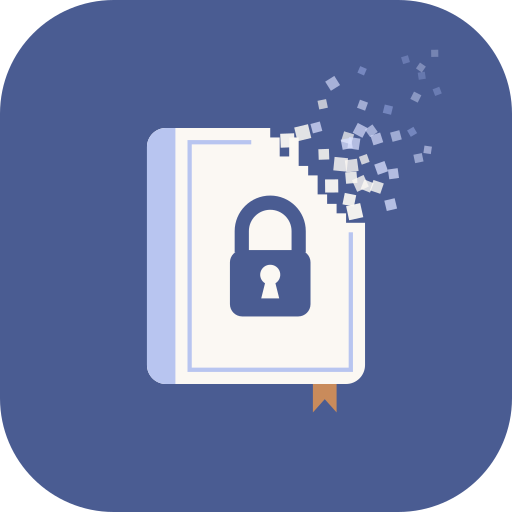
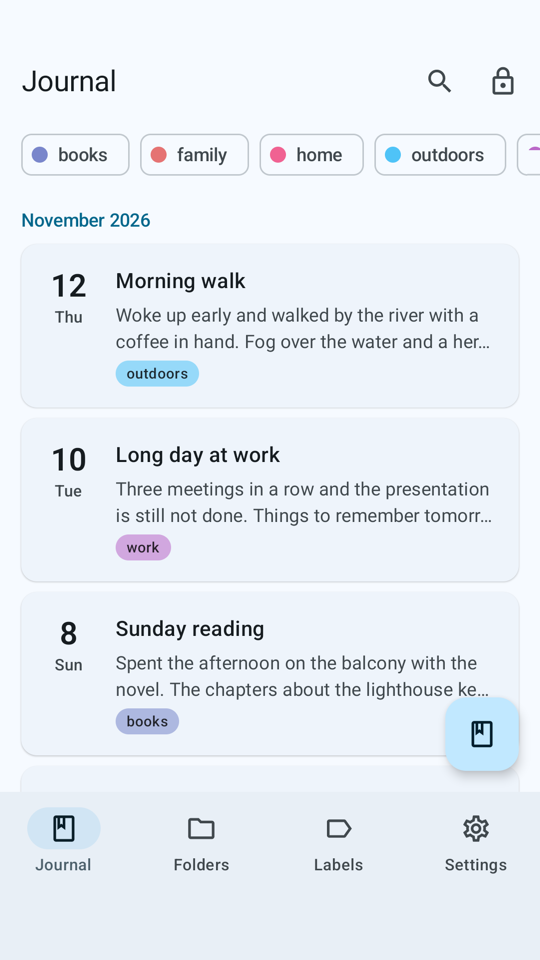
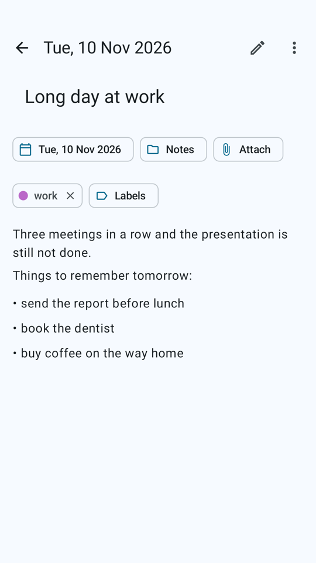
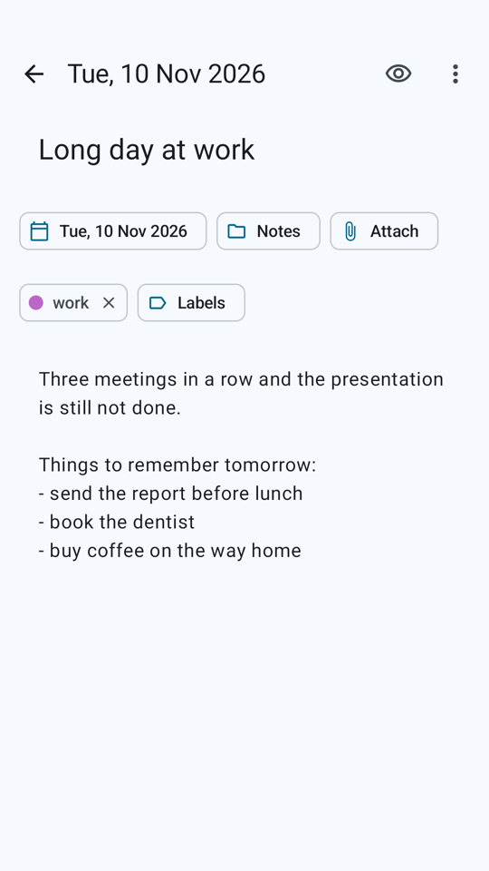
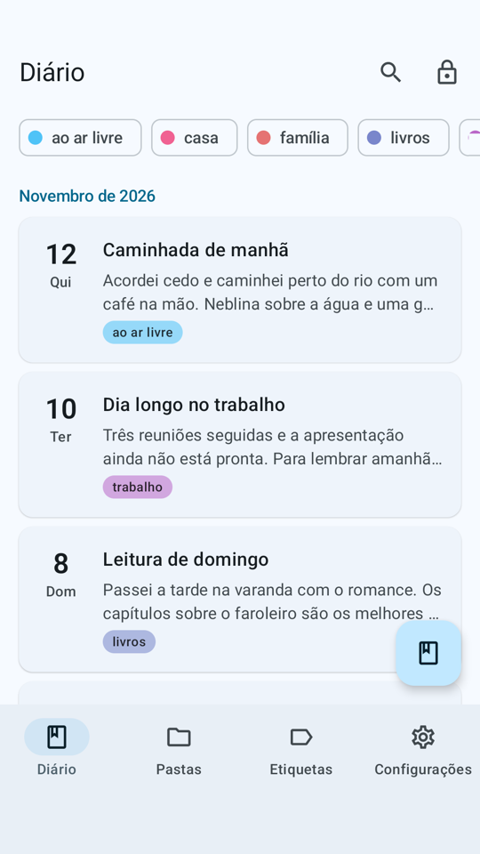
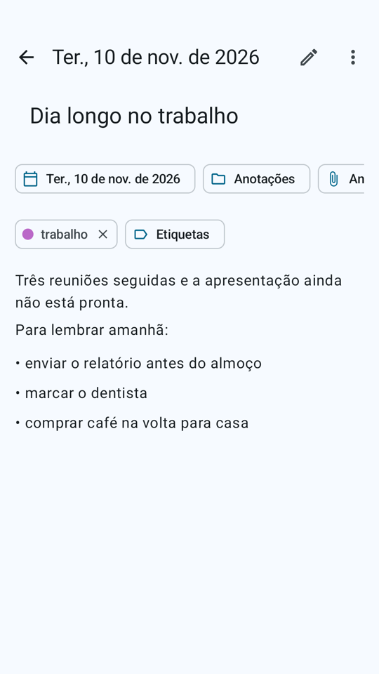
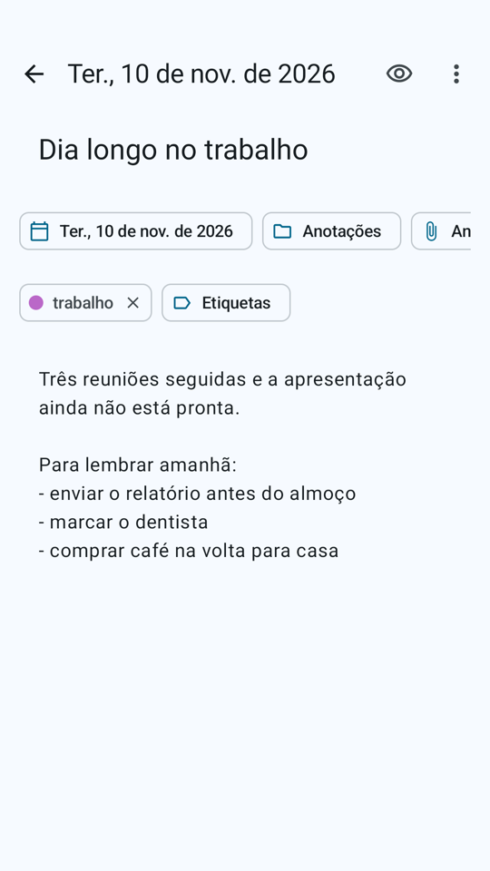

secrt
A private diary that stays yours.
secrt is a diary app for Android and computers. Everything you write is encrypted on your device with a key only your password can unlock. There are no accounts, no servers of ours, no ads and no tracking: your diary lives on your devices, and goes elsewhere only when you ask.



What it does
- Write freely. Entries in Markdown, with photos and files attached, organized in folders and labels.
- Find anything. Full-text search across titles and entries, even though it's all encrypted.
- Encrypted by default. The whole diary, including titles, folders and labels, is stored in an encrypted database. Optional fingerprint or face unlock, and a recovery key in case you forget your password.
- Back up where you choose. Encrypted backups to your own Google Drive or to your own server (WebDAV, such as Nextcloud), or to an encrypted file.
- Sync your devices. Pair your phone and computer with a QR code and sync directly over your local network, with no cloud in between.
How secrt uses your Google account
Connecting a Google account is optional, and only needed to back up to Google Drive. When you do, secrt asks for:
- Access to its own app folder in your Google Drive (
drive.appdata), to save and restore your encrypted backup there. secrt can't see or change any of your other files. - Your email address, only to show you which account is connected.
The backup is encrypted on your device before it is uploaded, so neither Google nor we can read it. Nothing is sent to us. secrt's use of information received from Google APIs adheres to the Google API Services User Data Policy, including the Limited Use requirements. See the privacy policy for the details.
More
secrt
Um diário privado que continua só seu.
O secrt é um app de diário para Android e computadores. Tudo o que você escreve é criptografado no seu aparelho, com uma chave que só a sua senha abre. Não há contas, servidores nossos, anúncios nem rastreamento: o diário fica nos seus aparelhos e só vai para outro lugar quando você pede.



O que ele faz
- Escreva à vontade. Registros em Markdown, com fotos e arquivos anexados, organizados em pastas e etiquetas.
- Encontre qualquer coisa. Busca em todo o texto dos títulos e registros, mesmo com tudo criptografado.
- Criptografado por padrão. O diário inteiro, incluindo títulos, pastas e etiquetas, fica num banco de dados criptografado. Desbloqueio por digital ou rosto opcional, e uma chave de recuperação caso você esqueça a senha.
- Backup onde você escolher. Backups criptografados no seu próprio Google Drive, no seu próprio servidor (WebDAV, como o Nextcloud) ou num arquivo criptografado.
- Sincronize seus aparelhos. Pareie o celular e o computador com um QR code e sincronize direto pela sua rede local, sem nuvem no meio.
Como o secrt usa sua conta Google
Conectar uma conta Google é opcional e só é preciso para fazer backup no Google Drive. Quando você conecta, o secrt pede:
- Acesso à pasta do próprio app no seu Google Drive (
drive.appdata), para salvar e restaurar ali o seu backup criptografado. O secrt não vê nem altera nenhum outro arquivo seu. - Seu endereço de email, só para mostrar qual conta está conectada.
O backup é criptografado no seu aparelho antes de ser enviado, então nem o Google nem nós conseguimos lê-lo. Nada é enviado para nós. O uso que o secrt faz das informações recebidas das APIs do Google segue a Política de dados do usuário dos serviços de API do Google, incluindo os requisitos de uso limitado. Veja os detalhes na política de privacidade.